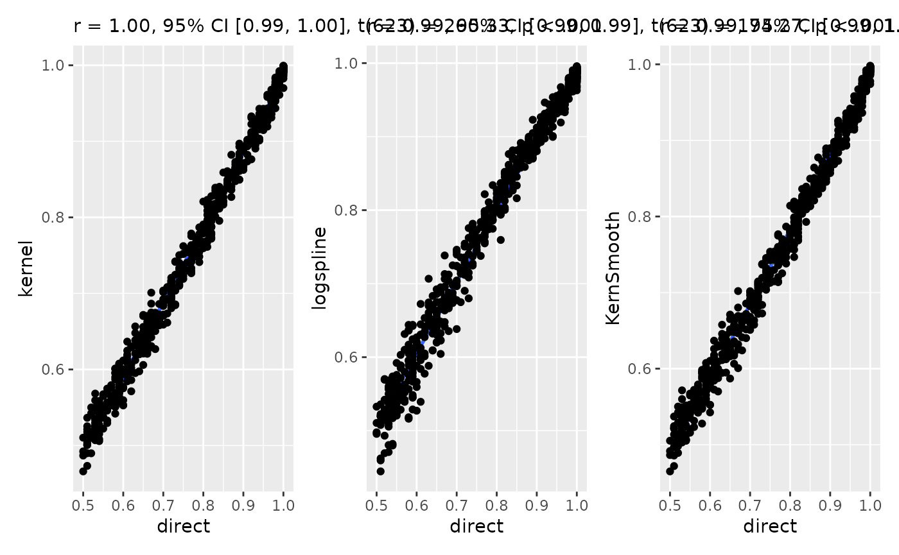

Probability of Direction (pd)
Source:vignettes/probability_of_direction.Rmd
probability_of_direction.RmdThis vignette can be referred to by citing the package:
- Makowski, D., Ben-Shachar, M. S., & Lüdecke, D. (2019). bayestestR: Describing Effects and their Uncertainty, Existence and Significance within the Bayesian Framework. Journal of Open Source Software, 4(40), 1541. https://doi.org/10.21105/joss.01541
- Makowski, D., Ben-Shachar, M. S., Chen, S. H. A., & Lüdecke, D. (2019). Indices of Effect Existence and Significance in the Bayesian Framework. Frontiers in Psychology 2019;10:2767. 10.3389/fpsyg.2019.02767
What is the pd?
The Probability of Direction (pd) is an index of effect existence, ranging from 50% to 100%, representing the certainty with which an effect goes in a particular direction (i.e., is positive or negative).
Beyond its simplicity of interpretation, understanding and computation, this index also presents other interesting properties:
- It is independent from the model: It is solely based on the posterior distributions and does not require any additional information from the data or the model.
- It is robust to the scale of both the response variable and the predictors.
- It is strongly correlated with the frequentist p-value, and can thus be used to draw parallels and give some reference to readers non-familiar with Bayesian statistics.
However, this index is not relevant to assess the magnitude and
importance of an effect (the meaning of “significance”), which is better
achieved through other indices such as the ROPE
percentage. In fact, indices of significance and existence are
totally independent. You can have an effect with a pd of
99.99%, for which the whole posterior distribution is
concentrated within the [0.0001, 0.0002] range. In this
case, the effect is positive with a high certainty, but
also not significant (i.e., very small).
Indices of effect existence, such as the pd, are particularly useful in exploratory research or clinical studies, for which the focus is to make sure that the effect of interest is not in the opposite direction (for clinical studies, that a treatment is not harmful). However, once the effect’s direction is confirmed, the focus should shift toward its significance, including a precise estimation of its magnitude, relevance and importance.
Relationship with the p-value
In most cases, it seems that the pd has a direct correspondence with the frequentist one-sided p-value through the formula: \[p_{one-sided} = 1-p_d\] Similarly, the two-sided p-value (the most commonly reported one) is equivalent through the formula: \[p_{two-sided} = 2*(1-p_d)\] Thus, the two-sided p-value of respectively .1, .05, .01 and .001 would correspond approximately to a pd of 95%, 97.5%, 99.5% and 99.95% .
Correlation between the frequentist p-value and the probability of direction (pd)
But if it’s like the p-value, it must be bad because the p-value is bad [insert reference to the reproducibility crisis].
In fact, this aspect of the reproducibility crisis might have been misunderstood. Indeed, it is not that the p-value is an intrinsically bad or wrong. Instead, it is its misuse, misunderstanding and misinterpretation that fuels the decay of the situation. For instance, the fact that the pd is highly correlated with the p-value suggests that the latter is more an index of effect existence than significance (i.e., “worth of interest”). The Bayesian version, the pd, has an intuitive meaning and makes obvious the fact that all thresholds are arbitrary. Additionally, the mathematical and interpretative transparency of the pd, and its reconceptualisation as an index of effect existence, offers a valuable insight into the characterization of Bayesian results. Moreover, its concomitant proximity with the frequentist p-value makes it a perfect metric to ease the transition of psychological research into the adoption of the Bayesian framework.
Methods of computation
The most simple and direct way to compute the pd is to 1) look at the median’s sign, 2) select the portion of the posterior of the same sign and 3) compute the percentage that this portion represents. This “simple” method is the most straightforward, but its precision is directly tied to the number of posterior draws.
The second approach relies on density estimation. It starts by estimating the density function (for which many methods are available), and then computing the area under the curve (AUC) of the density curve on the other side of 0. The density-based method could hypothetically be considered as more precise, but strongly depends on the method used to estimate the density function.
Methods comparison
Let’s compare the 4 available methods, the direct
method and 3 density-based methods differing by their
density estimation algorithm (see estimate_density).
Correlation
Let’s start by testing the proximity and similarity of the results obtained by different methods.

All methods give are highly correlated and give very similar results. That means that the method choice is not a drastic game changer and cannot be used to tweak the results too much.
Accuracy
To test the accuracy of each methods, we will start by computing the direct pd from a very dense distribution (with a large amount of observations). This will be our baseline, or “true” pd. Then, we will iteratively draw smaller samples from this parent distribution, and we will compute the pd with different methods. The closer this estimate is from the reference one, the better.
data <- data.frame()
for (i in 1:25) {
the_mean <- runif(1, 0, 4)
the_sd <- abs(runif(1, 0.5, 4))
parent_distribution <- rnorm(100000, the_mean, the_sd)
true_pd <- as.numeric(pd(parent_distribution))
for (j in 1:25) {
sample_size <- round(runif(1, 25, 5000))
subsample <- sample(parent_distribution, sample_size)
data <- rbind(
data,
data.frame(
sample_size = sample_size,
true = true_pd,
direct = as.numeric(pd(subsample)) - true_pd,
kernel = as.numeric(pd(subsample, method = "kernel")) - true_pd,
logspline = as.numeric(pd(subsample, method = "logspline")) - true_pd,
KernSmooth = as.numeric(pd(subsample, method = "KernSmooth")) - true_pd
)
)
}
}
data <- as.data.frame(sapply(data, as.numeric))
library(datawizard) # for reshape_longer
data <- reshape_longer(data, select = 3:6, names_to = "Method", values_to = "Distance")
ggplot(data, aes(x = sample_size, y = Distance, color = Method, fill = Method)) +
geom_point(alpha = 0.3, stroke = 0, shape = 16) +
geom_smooth(alpha = 0.2) +
geom_hline(yintercept = 0) +
theme_classic() +
xlab("\nDistribution Size")The “Kernel” based density methods seems to consistently underestimate the pd. Interestingly, the “direct” method appears as being the more reliable, even in the case of small number of posterior draws.
Can the pd be 100%?
p = 0.000 is coined as one of the term to avoid when
reporting results (Lilienfeld et al.,
2015), even if often displayed by statistical software. The
rationale is that for every probability distribution, there is no value
with a probability of exactly 0. There is always some infinitesimal
probability associated with each data point, and the
p = 0.000 returned by software is due to approximations
related, among other, to finite memory hardware.
One could apply this rationale for the pd: since all data
points have a non-null probability density, then the pd (a
particular portion of the probability density) can never be
100%. While this is an entirely valid point, people using the
direct method might argue that their pd is based on
the posterior draws, rather than on the theoretical, hidden, true
posterior distribution (which is only approximated by the posterior
draws). These posterior draws represent a finite sample for which
pd = 100% is a valid statement.